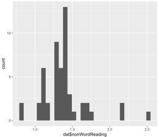
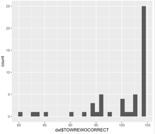

download.file("https://github.com/lu-psy-r/statistics_for_psychologists/blob/main/PSYC122/data/week12/122_week12_forStudents/VapingData.csv?raw=true", destfile = "VapingData.csv")2. Week 12 - Correlation Part 2
Written by Margriet Groen (partly adapted from materials developed by the PsyTeachR team at the University of Glasgow)
Today we will continue to look at correlation as a measure of association between two numerical variables. We will review assumptions associated with correlation, discuss some issues important to be aware of when interpreting correlation results and finally, we’ll talk about intercorrelation.
Lectures
The lecture material for this week is presented in three parts:
- Theory – Assumptions, issues and inter-correlation(~25 minutes) Watch this part before you complete the reading and the pre-lab activities. The video has captions, in case you find that helpful. You can download the slides and a transcript from the links below the video.
- How to – Assumptions, issues and inter-correlation(~25 minutes) Watch this part after you’ve completed the reading and before you attend the lab session.
- Data wrangling with dplyr(~10 minutes) Watch this part before you complete the pre-lab activities and before you attend the lab session.
Reading
The reading that accompanies the lectures this week is again from chapter 9 of the core text by Howell (2017).
Rougly, last week we covered the material in sections 9.1 to 9.4, as well as sections 9.8 to 9.11 and section 9.15. This week, we’ll cover the material in sections 9.5 to 9.7, and sections 9.12 to 9.13. Even if a section is not mentioned here, all of chapter 9 is relevant.
Pre-lab activities
After having watched the lectures on correlation and read the textbook chapters you’ll be in a good position to try these activities. Completing them before you attend your lab session will help you to consolidate your learning and help move through the lab activities more smoothly.
Pre-lab activity 1: Data-wrangling with dplyr
Data comes in lots of different formats. One of the most common formats is that of a two-dimensional table (the two dimensions being rows and columns). Usually, each row stands for a separate observation (e.g. a participant), and each column stands for a different variable (e.g. a response, category, or group). A key benefit of tabular data is that it allows you to store different types of data-numerical measurements, alphanumeric labels, categorical descriptors-all in one place.
It may surprise you to learn that scientists actually spend far more of time cleaning and preparing their data than they spend actually analysing it. This means completing tasks such as cleaning up bad values, changing the structure of tables, merging information stored in separate tables, reducing the data down to a subset of observations, and producing data summaries. Some have estimated that up to 80% of time spent on data analysis involves such data preparation tasks (Dasu & Johnson, 2003)!
Many people seem to operate under the assumption that the only option for data cleaning is the painstaking and time-consuming cutting and pasting of data within a spreadsheet program like Excel. We have witnessed students and colleagues waste days, weeks, and even months manually transforming their data in Excel, cutting, copying, and pasting data. Fixing up your data by hand is not only a terrible use of your time, but it is error-prone and not reproducible. Additionally, in this age where we can easily collect massive datasets online, you will not be able to organise, clean, and prepare these by hand.
In short, you will not thrive as a psychologist if you do not learn some key data wrangling skills. Although every dataset presents unique challenges, there are some systematic principles you should follow that will make your analyses easier, less error-prone, more efficient, and more reproducible.
The functions you’ll need in lab activity 2 include select(), filter(), mutate(), group_by() and summarise() from the dplyr package.
You’ve used these functions before, but the following ‘recipes’ summarise what each one does and how to use it.
TASK Have a look at each ‘recipe’ and read through it. Try to understand each step.
TipRecipes - how to use them
Each ‘recipe’ has the same structure.
- First, it summarises what it is that you want to achieve when using that specific function. In the case of
select()it says “You want to extract specific columns from a data frame and return them as a new, smaller data frame.” - Then, it outlines a number of steps that you need to carry out when using this function. For
select()it outlines 2 steps: 1. Pass the dataframe to the function. 2. List the column(s) to return. - Finally, there is an example talks you through using the function with some data. For
select()it uses an example with data on the weather. - Additional information appears in extra boxes with a light-bulb icon. If you find those confusing, don’t worry about them at this stage.
Pre-lab activity 2: Getting ready for the lab class
Get your files ready
Download the 122_week12_forStudents.zip file and upload it into the new folder in RStudio Server you created (see last week’s Pre-lab activity 4 for instructions on how to do that.
ImportantIf you have difficulty uploading files to the server
If you get error messages when attempting to upload a file or a folder with files to the server, you can try the following steps:
- Close the R Studio server, close your browser and start afresh.
- Open the R Studio server in a different browser.
- Follow a work around where you use code to directly download the file to the server. The code to do that will be available at the start of the lab activity where you need that particular file. The code to download the file you need to complete the quiz is below.
Lab activities
In this lab, you’ll gain understanding of and practice with:
- constructing and interpreting histograms and qq-plots
- constructing and interpreting a matrix of scatterplots
- running intercorrelation analysis and interpret the results
- correct for multiple comparisons when running intercorrelation analysis
- constructing a correlation matrix in APA format
- when and why to apply correlation analysis to answers questions in psychological science
Lab activity 1: Assumptions of Correlation Analysis
Question 1
Correlation would be an appropriate form on analysis for researchers interested in the relationship between:
- Dog (breed) and height (cm) of owner
- Speed of swimming (mph) and area of tank (cm)
- Number of cows sitting and rain fall (mm)
- Total llama saliva (ml) expelled and gender of visitors
- b and d
- b and c
Question 2
When would you use Spearman’s rho analysis instead of Pearson’s r?
- When there are clear outliers in the data
- When the data is not normally distributed
- When the relationship between X and Y is curvilinear
- a and b
Question 3
Using the histograms and qq-plots below, which of these variables satisfies the normality assumption? Explain your answers.
Histogram non-words 
QQ-plot non-words 
Histogram words 
QQ-plot words 
Histogram vocabulary 
QQ-plot vocabulary 
Question 4
Why should correlation analysis not be conducted on variables with a curvilinear relationship?
Lab activity 2: Attitudes towards vaping
Great work so far! Now we really want to see what you can do yourself. In this activity we’ll use real data on implicit and explicit attitudes towards vaping.
Background
Explicit attitudes were measured via a questionnaire where higher scores indicated a positive attitude towards vaping (VapingQuestionaireScore). Implicit attitudes were measured through an Implicit Association Test (IAT) using images of Vaping and Kitchen utensils and associating them with positive and negative words.
The IAT works on the principal that associations that go together (that are congruent, e.g. warm and sun) should be quicker to respond to than associations that do not go together (that are incongruent, e.g. warm and ice). You can read up more on the procedure on the Noba Project which has a good description of the procedure under the section “Subtle/Nonsconscious Research Methods”.
For this exercise, you need to know that “Block 3” in the experiment tested reaction times and accuracy towards congruent associations, pairing positive words with Kitchen utensils and negative words with Vaping. “Block 5” in the experiment tested reaction times and accuracy towards incongruent associations, pairing positive words with Vaping and negative words with Kitchen Utensils. As such, if reaction times were longer in Block 5 than in Block 3 then people are considered to hold the view that Vaping is negative (i.e. congruent associations are quicker than incongruent associations). However, if reaction times were quicker in Block 5 than in Block 3 then people are considered to hold the view that Vaping is positive (i.e. incongruent associations were quicker than congruent associations). The difference between reaction times in Block5 and Block3 is called the participants’ IAT score.
WarningBefore we begin
Let’s put the basics in place:
- Make sure you have started a new R Markdown script. If you need a reminder of how to do that, please revisit week 6 of PSYC121 (here).
- You’ll need the data file
VapingData.csvyou downloaded when completing Pre-lab activity 2. If you experienced issues with uploading files to the server, follow the instructions below. - When starting a new analysis, it is a good idea to empty the R environment. This prevents objects and variables from previous analyses interfering with the current one.
- Finally, make sure your working directory is set to the folder in which you have stored the data file (
VapingData.csv).
ImportantIf you couldn’t upload files to the server, do this:
If you experienced difficulties with uploading a folder or a file to the server, you can use the code below to directly download the file you need in this lab activity to the server (instead of first downloading it to you computer and then uploading it to the server). Remember that you can copy the code to your clipboard by clicking on the ‘clipboard’ in the top right corner.
TipCleaning the R environment
You can clean the R environment by clicking on the broom icon at the top right of the environment window, or you can use the code below.
rm(list=ls())
TipChecking your working directory
Use the code below to check what you working directory is currently set to. This is the folder that R will use to look for files. Is the file path that is written to the Console after you run the code snippet the one that contains the data file? You can check by nativating to the path you can see in the Console in the ‘Files’ pane on the right. Does it contain the data file (‘VapingData.csv’)?
getwd()If your working directory is not set to the folder that contains the data file, navigate to folder that contains the data file in the ‘Files’ pane, click ‘More’ and then on ‘Set as working directory’.

Step 1. Add the code to load the relevant libraries in a new code chunk. We need the following ones:
broom,car,Hmisc,lsrandtidyverse. If you are unsure, you can look at the ‘Hint’ below for a clue by expanding it. After that, if you are still unsure, you can view the code by expanding the ‘Code’ section below.
TipHint
Use the library()function. Remember to put it inside a ‘code chunk’ in your R Markdown script.
TipCode
The code to do this is below.
library(broom)
library(car)
library(Hmisc)
library(lsr)
library(tidyverse)Step 2. Read in the data. The data file we’ll be working with is
VapingData.csv. Have a look at the layout of the data and familiarise yourself with it. You have 8 columns. Reaction times and Accuracy scores for Blocks 3 and 5 as well as the Explicit Vaping Questionnaire scores, Sex and Age, for each participant.
Question 2a: For how many participants do we have data?
TipHint
Use the read_csv()function.
TipCode
The code to do this is below.
dat <- read_csv("VapingData.csv")Step 3. Data wrangling. The data are not in a shape yet that we can actually use for our analysis. We’ll have to do some ’data wrangling to knock them into shape. We need to take the following into account:
- Accuracy was calculated as proportion and as such can’t go above 1. Participants entered their own data so some might have made a mistake. Remove participants who had an accuracy greater than 1 in either Block 3 or Block 5 as we are unclear on the accuracy of these values.
- We also only want participants who were paying attention so best remove anybody whose average accuracy score across Blocks 3 and 5 was less than 80%. Note - this value is arbitrary and if you wanted, in your own experiment, you could use a more relaxed or strict cut-off based on other studies or guidance. Note that these decisions should be set out at the start of your research as part of your pre-registration or as part of your Registered Report. Finally, in this instance, remember, the values are in proportions not percentages (so 80% will be .8).
- Now that we have removed data points that were the result of data entry mistakes or came from participants who didn’t pay attention during the task, we create an IAT score for participants by subtracting Block 3 reaction times (RT) from Block 5 reaction times (IAT_BLOCK5_RT - IAT_BLOCK3_RT).
Look closely at each line of code below and check you understand what it does. Copy the code to your script and for each line add a comment to describe what it does.
dat <- dat %>%
filter(IAT_BLOCK3_Acc < 1) %>%
filter(IAT_BLOCK5_Acc < 1) %>%
mutate(IAT_ACC = (IAT_BLOCK3_Acc + IAT_BLOCK5_Acc)/2) %>%
filter(IAT_ACC > .8) %>%
mutate(IAT_RT = IAT_BLOCK5_RT - IAT_BLOCK3_RT)
TipRecipes
You might want to revisit the ‘recipes’ for filter() and mutate() we looked at in pre-lab activity 1 (here Section 3) to remind yourself what these functions do and how to use them.
Question 3a: For how many participants do we have data now that we have cleaned them up?
Question 3b: Use the information in the background description to understand how the scores relate to attitudes. What does a positive IAT_RT score reflect? What does a negative IAT_RT score reflect? What does a higher score on the ‘VapingQuestionnaireScore’ mean?
Step 4. Calculating descriptive statistics. Now that we have the variables that we need and the data cleaned up, we will create a descriptives summary of the number of people, and the means for the IAT and Vaping Questionnaire Score. Look closely at each line of code below and check you understand what it does. Copy the code to your script and for each line add a comment to describe what it does.
descriptives <- dat %>%
summarise(n = n(),
mean_IAT_ACC = mean(IAT_ACC),
mean_IAT_RT = mean(IAT_RT),
mean_VPQ = mean(VapingQuestionnaireScore, na.rm = TRUE))Question 4a: Why might these averages be useful? Why are averages not always useful in correlations?
Step 5. Check the assumptions.
Variable types
Questions 5a: What are the variable types for the implicit (IAT_RT) and the explicit (VapingQuestionnaireScore) attitude variables?
Missing data
Remove participants with missing data.
TipHint
Use the filter() function and the is.na() function.
TipCode
The code to do this is below.
dat <- dat %>%
filter(!is.na(VapingQuestionnaireScore)) %>%
filter(!is.na(IAT_RT))Question 5b How many people had missing data?
Normality
Create histograms and qq-plots for the
IAT_RTandVapingQuestionnaireScorevariables.
TipHint
Use the ggplot() function with geom_histogram() and use the qqPlot() function (note the capital P).
TipCode
The code to do this is below.
ggplot(dat, aes(x = VapingQuestionnaireScore)) +
geom_histogram(binwidth = 10) +
theme_bw()
qqPlot(x = dat$VapingQuestionnaireScore)
ggplot(dat, aes(x = IAT_RT)) +
geom_histogram(binwidth = 10) +
theme_bw()
qqPlot(x = dat$IAT_RT)Question 5c What do you conclude from the histograms and the qq-plots? Are the VapingQuestionnaireScore and the IAT_RT normally distributed?
Linearity and homoscedasticity
Plot the relationship between IAT_RT and VapingQuestionnaireScore using a scatterplot and a line of best fit.
TipHint
For this you’ll need the ggplot() function together with geom_point() and geom_smooth(). Make sure to give your axes some sensible labels.
TipCode
ggplot(dat, aes(x = IAT_RT, y = VapingQuestionnaireScore)) +
geom_point() +
geom_smooth(method = "lm", se = FALSE) +
theme_bw() +
labs(x = "Implicit attitude", y = "Explicit attitude")Question 5d What do you conclude from the scatterplot in terms of the homoscedasticity of the data and the linearity, direction and strength of the relationship? What does the scatterplot tell you about possible issues (outliers, range restrictions)?
Step 6. Conduct a correlation analysis.
Question 6a Do you need to calculate Pearson’s r or Spearman’s rho? Why?
TipHint
Use the cor.test() function. You may want to use the pull() and the round() functions to get the numbers out.
TipCode
results <- cor.test(dat$VapingQuestionnaireScore,
dat$IAT_RT,
method = "pearson") %>%
tidy()
results
correlation <- results %>%
pull(estimate) %>%
round(2)
df <- results %>%
pull(parameter) %>%
round(0)
pvalue <- results %>%
pull(p.value) %>%
round(3)Question 6b Is the correlation significant?
Step 7. Write a few sentences in which you report this result, following APA guidelines. Make sure to include the r, df, p-value and an interpretation.
Step 8. Intercorrelations. Finally, let’s check whether either implicit or explicit attitude is associated with age. First, let’s create a new data frame that only includes the relevant variables. Look closely at each line of code below and check you understand what it does. Don’t forget to copy the code below to your script and run it.
dat_matrix <- dat %>%
select(Age, IAT_RT, VapingQuestionnaireScore) %>%
as.data.frame() # Make sure tell R that dat is a data frameNow, create a matrix of scatterplots.
TipHint
Use the pairs() function.
TipCode
pairs(dat_matrix)Question 8a What do you conclude from the scatterplots?
Finally, conduct intercorrelation (multiple correlations).
TipHint
Use the correlate() function. Do you need Pearson’s r or Spearman’s rho? Have you adjusted for multiple comparisons?
TipCode
intercor_results <- correlate(x = dat_matrix, # our data
test = TRUE, # compute p-values
corr.method = "spearman", # run a spearman test
p.adjust.method = "bonferroni") # use the bonferroni correction
intercor_resultsQuestion 8b What do you conclude from the results of the correlation analysis?
Answers
When you have completed all of the lab content, you may want to check your answers with our completed version of the script for this week. Remember, looking at this script (studying/revising it) does not replace the process of working through the lab activities, trying them out for yourself, getting stuck, asking questions, finding solutions, adding your own comments, etc. Actively engaging with the material is the way to learn these analysis skills, not by looking at someone else’s completed code…
Lab activity 1
- Correlation would be an appropriate form on analysis for researchers interested in the relationship between
- When would you use Spearman’s rho analysis instead of Pearson’s r?
- Using the histograms and qq-plots below, which of these variables satisfies the normality assumption? Explain your answers.
- Why should correlation analysis not be conducted on variables with a curvilinear relationship?
Lab activity 2
You can download the R-Markdown script that contains the code to complete lab activity 2 here: 122_wk12_labAct2.R.
Question 2a. For how many participants do we have data?
Question 3a. For how many participants do we have data now that we have cleaned them up?
Question 3b. Use the information in the background description to understand how the scores relate to attitudes. What does a positive IAT_RT score reflect?
What does a negative IAT_RT score reflect?
What does a higher score on the ‘VapingQuestionnaireScore’ mean?
Question 4a. Why might these averages be useful? Why are averages not always useful in correlations?
Question 5a. What are the variable types for the implicit (IAT_RT) and the explicit (VapingQuestionnaireScore) attitude variables?
Question 5b. How many people had missing data?
Question 5c. What do you conclude from the histograms and the qq-plots? Are the VapingQuestionnaireScore and the IAT_RT normally distributed?
Question 5d. What do you conclude from the scatterplot in terms of the homoscedasticity of the data and the linearity, direction and strength of the relationship? What does the scatterplot tell you about possible issues (outliers, range restrictions)?
Question 6a. Do you need to calculate Pearson’s r or Spearman’s rho?
Question 6b. Is the correlation significant?
Write a few sentences in which you report this result, following APA guidelines. Make sure to include the r, df, p-value and an interpretation.
Question 8a. What do you conclude from the scatterplots?
Question 8b. What do you conclude from the results of the correlation analysis?
Online Q&A
Below is the recording of this week’s online Q&A.